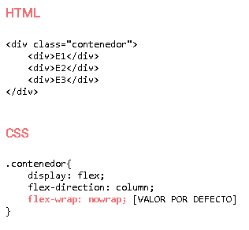

FLEXBOX
CONCEPTOS IMPORTANTES
La propiedad display con valor flex o inline-flex nos permite establecer un contenedor flexible. Los hijos del contenedor flexible se llaman elementos flexibles.
TERMINOS IMPORTANTES
Eje principal(Anticucho de elementos flexibles)
Es un eje a lo largo del cual se disponen los elementos flexibles. No es necesariamente horizontal; depende de la propiedad flex-direction.
Lado inicial del eje principal | Lado final del eje principal
Los elementos flexibles se colocan dentro del contenedor comenzando desde el Lado inicial del eje principal yendo al lado final del eje principal.
Lineas flexibles
Las líneas flexibles son construcciones imaginarias que alojan a los elementos flexibles. Pueden existir varias o una linea flexible dentro de un contenedor flexible.
Eje transversal (Anticucho de lineas flexibles)
Es un eje a lo largo del cual se disponen las lineas flexibles. Es un eje perpendicular al eje principal.
Lado inicial del eje transversal | Lado final del eje transversal
Las líneas flexibles se colocan en el contenedor comenzando en el lado inicial del eje transversal yendo hacia el lado final del eje transversal.
Tamaño principal
El tamaño principal de un contenedor o un elemento flexible es su ancho (width) cuando el eje principal es horizontal y es su alto (height) cuando el eje principal es vertical.
Tamaño transversal
El tamaño transversal de un contenedor o un elemento flexible es su alto (height) cuando el eje transversal es vertical y es su ancho (width) cuando el eje transversal es horizontal.
FLEXBOX: EJE PRINCPAL
La propiedad flex-direction permite establecer la dirección del eje principal del contenedor flexible. Los elementos flexibles se colocan a en la dirección del eje principal.
FLEXBOX: EJE PRINCPAL DE IZQUIERDA A DERECHA
FLEXBOX: EJE PRINCPAL DE DERECHA A IZQUIERDA
FLEXBOX: EJE PRINCIPAL DE ARRIBA A ABAJO
FLEXBOX: EJE PRINCIPAL DE ABAJO A ARRIBA
FLEXBOX: EJE TRANVERSAL
La propiedad flex-wrap controla si el contenedor flexible es de una sola línea o de varias líneas y la dirección del eje transversal, que determina la dirección en la que se alinean las líneas flexibles.
CONTENEDOR FLEXIBLE DE UNA SOLA LINEA (LOS ELEMENTOS FLEXIBLES SE COLOCAN DE IZQUIERDA A DERECHA)
CONTENEDOR FLEXIBLE DE UNA SOLA LINEA (LOS ELEMENTOS FLEXIBLES SE COLOCAN DE DERECHA A IZQUIERDA)
CONTENEDOR FLEXIBLE DE UNA SOLA LINEA (LOS ELEMENTOS FLEXIBLES SE COLOCAN DE ARRIBA A ABAJO)

CONTENEDOR FLEXIBLE DE UNA SOLA LINEA (LOS ELEMENTOS FLEXIBLES SE COLOCAN DE ABAJO A ARRIBA)
CONTENEDOR FLEXIBLE DE VARIAS LINEAS (LOS ELEMENTOS FLEXIBLES SE COLOCAN DE IZQUIERDA A DERECHA)
CONTENEDOR FLEXIBLE DE VARIAS LINEAS (LOS ELEMENTOS FLEXIBLES SE COLOCAN DE DERECHA A IZQUIERDA)
CONTENEDOR FLEXIBLE DE VARIAS LINEAS (LOS ELEMENTOS FLEXIBLES SE COLOCAN DE ARRIBA A ABAJO)
CONTENEDOR FLEXIBLE DE VARIAS LINEAS (LOS ELEMENTOS FLEXIBLES SE COLOCAN DE IZQUIERDA A DERECHA)
CONTENEDOR FLEXIBLE DE VARIAS LINEAS IZQUIERDA (LOS ELEMENTOS FLEXIBLES SE COLOCAN DE DERECHA A IZQUIERDA)
CONTENEDOR FLEXIBLE VARIAS LINEAS (LOS ELEMENTOS FLEXIBLES SE COLOCAN DE ARRIBA A ABAJO)
CONTENEDOR FLEXIBLE DE VARIAS LINEAS (LOS ELEMENTOS FLEXIBLES SE COLOCAN DE ABAJO A ARRIBA)
FLEXBOX: COLOCAR LINEAS
La propiedad align-content alinea líneas dentro de un contenedor flexible. . Existen seis valores posibles para esta propiedad.
FLEX-START
Las lineas se colocan a partir del lado inicial del eje transversal.
FLEX-END
Las lineas se desplazan al lado final del eje transversal.
SPACE-BETWEEN
La distancia entre cualquier par de líneas adyacentes es la misma. La primera línea se encuentra pegada al lado inicial del eje transversal y la última línea se encuentra pegada al lado final del eje transversal.
CENTER
Las líneas se colocan al centro del contenedor flexible con respecto al eje transversal. La distancia entre el lado inicial del eje transversal y la primera línea es la misma distancia que hay entre el lado final del eje transversal y la ultima línea.
SPACE-AROUND
La distancia entre cualquier par de líneas adyacentes siempre es la misma. La distancia entre el lado inicial del eje transversal y la primera línea es la misma distancia que existe entre el lado final del eje transversal y la última línea, además esta distancia es la mitad de la distancia entre líneas adyacentes.
STRETCH
Las líneas se estiran para ocupar el espacio restante. El espacio libre en el contenedor se divide por igual entre todas las líneas.
FLEXBOX: COLOCAR ELEMENTOS
La propiedad justify-content establece cómo se distribuyen los elementos flexibles en una línea flexible en la dirección del eje principal.
FLEX-START
Si el contenedor flexible es de una sola línea y es demasiado pequeño para contener todos los elementos, los elementos flexibles se desbordan en dirección del eje principal.
FLEX-END
Si el contenedor flexible es de una sola linea y es demasiado pequeño para contener todos los elementos, los elementos flexibles se desbordan en dirección contraria del eje principal.
CENTER
Si el contenedor flexible es de una sola línea y es demasiado pequeño para contener todos los elementos, los elementos flexibles se desbordan por igual en ambas direcciones.
SPACE-BETWEEN
Si el contenedor flexible es de una sola línea y es demasiado pequeño para contener todos los elementos, los elementos flexibles se desbordan por igual en ambas direcciones.
SPACE-AROUND
Si el contenedor flexible es demasiado pequeño para contener todos los elementos y es de una sola linea, los elementos flexibles se desbordan por igual en ambas direcciones.
STRETCH
Los elementos flexibles se estiran para ocupar todo el espacio disponible en la linea flexible en la direccion del eje transversal.
FLEX-START
Los elementos flexibles están pegados al borde de la línea flexible que se encuentra más cerca del lado inicial del eje transversal.
FLEX-END
Los elementos flexibles están pegados al borde de la línea flexible que se encuentra más cerca del lado final del eje transversal.
CENTER
La distancia entre el elemento flexible y los bordes de la línea flexible que son paralelos a los lados del eje transversal, es el mismo.